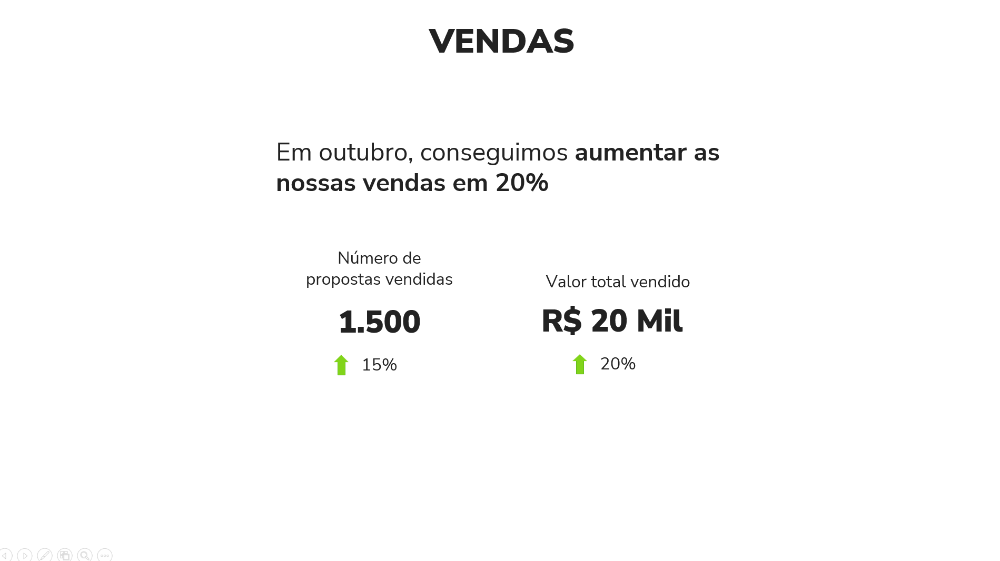
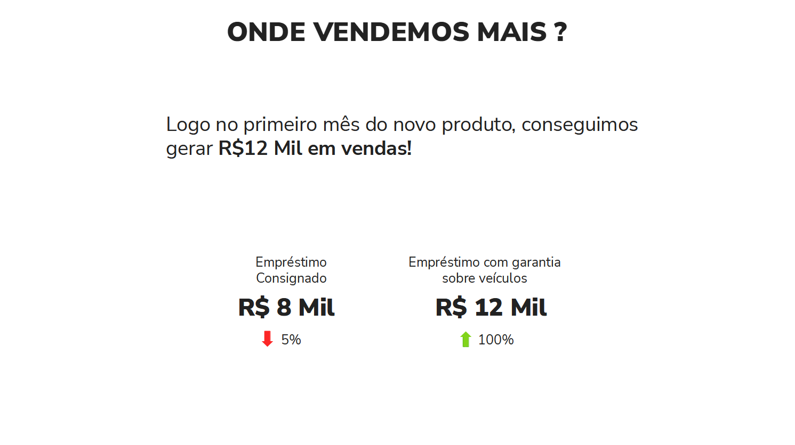
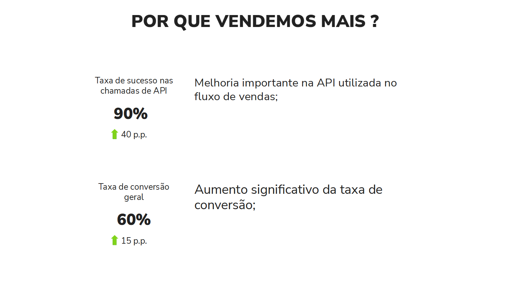

1 Introdução
Este artigo discute como eu melhorei o meu processo de Data Storytelling dentro das minhas apresentações e relatórios entregues ao Banco BMG e ao Banco Pan (os quais são dois dos maiores bancos comerciais do mercado brasileiro). Busco compartilhar o que aprendi nesse processo, e dou algumas dicas que possivelmente vão ajudá-lo a construir relatórios de dados mais intuitivos, cativantes, claros e efetivos.
Em resumo, vamos discutir neste artigo as seguintes dicas:
- Data Storytelling é sobre contar histórias através de dados;
- Evite textos longos em seus slides;
- Trace relações entre os indicadores;
- Construa sua história em torno de uma mensagem principal;
- Entregue sua história aos poucos;
- Histórias tem estrutura, use essas estruturas ao seu favor (modelo dos 4 C’s e evolução do personagem);
A maior parte desses conhecimentos foram construídos através de intensa pesquisa, reflexão e planejamento sobre as minhas apresentações, e, posteriormente, adquirindo feedbacks, e realizando pequenos ajustes aqui e ali. Sendo assim, um grande trabalho como um todo, e, como você pode esperar, esse processo também envolveu mais de uma pessoa.
Durante esse processo, eu tive ajuda de meus colegas de trabalho, Andressa de Souza Freitas e Guilherme Gomes, mas também, tive uma grande ajuda da UX Designer Alê Fernandes. Vários dos conhecimentos apresentados aqui, eu aprendi com a Alê. Esses conhecimentos revolucionaram a maneira como eu construo minhas apresentações, e, por isso, eu sou imensamente grato a ela ❤️.
Todos os dados, gráficos e imagens mostrados neste artigo são meramente ilustrativos. Todos os números apresentados foram gerados de forma aleatória por um computador! Portanto, eles não representam os dados reais da plataforma Blip ou do Banco BMG, ou do Banco Pan de nenhuma forma ou dimensão!
2 Como era esse relatório antes ?
Na época, estávamos construindo um relatório mensal contendo vários indicadores e gráficos que mostravam o estado atual e a evolução recente dos serviços e produtos do Banco BMG ofertados dentro do canal do WhatsApp.
Contudo, o formato dessa apresentação era problemático. Nós trazíamos uma quantidade monumental de informações para o banco. A apresentação usualmente trazia em torno de 40 slides diferentes, com aproximadamente 36 gráficos e 70 indicadores diferentes. Para mais, nós tentávamos apresentar todo esse volume de informações em uma reunião de apenas 1 hora.
O resultado final disso tudo era uma apresentação que trazia um volume monumental de informações, porém, que também trazia um volume muito pequeno de insights e novas ideias de negócio para os gestores. Em Figura 1 temos uma representação de um dos vários slides dessa apresentação1. Imagine que essa apresentação trazia em torno de 40 slides semelhantes a esse:

Perceba que esse slide se parece mais com uma página de um dashboard, do que de um relatório apresentando as últimas tendências do mercado ou do negócio do banco. Isso é muito importante! Se a sua apresentação traz vários indicadores diferentes espalhados pela página, sem contextualizá-los, sem relacioná-los uns com os outros, sem trazer o que eles significam em conjunto, essa apresentação vai muito provavelmente se parecer com os dashboards que você já produz para o seu cliente.
Tendo isso em mente, qual é o incentivo/motivo/razão que o seu cliente tem para assistir à sua apresentação? Em outras palavras, se a sua apresentação mostra os mesmos gráficos/indicadores que os seus dashboards apresentam, o seu cliente não tem incentivo/motivo nenhum para assistir à sua apresentação. Pois não há nada na sua apresentação que seja novo, ou nenhuma informação da qual o seu cliente não tenha já acesso diretamente.
3 Como podemos melhorar?
Agora que você possui uma noção do tamanho que era o problema, nas próximas seções deste artigo, vou discutir algumas dicas essenciais (ou, algumas “ground rules”) que mostram como nós podemos melhorar e evoluir os modelos e as histórias de nossas apresentações para algo melhor, algo que desse maior clareza e impacto para o nosso cliente.
3.1 Data Storytelling não é sobre escolher “o melhor gráfico”
Alguns poucos analistas entendem “data storytelling” como um problema de visualização, ou, como a ciência de “escolher os melhores gráficos” para sua apresentação, ou como projetar gráficos inovadores, bonitos e complexos.
Contudo, data storytelling é sobre contar histórias com dados. Não sobre como construir visualizações. Escolher a visualização certa para apresentar os seus dados, torná-la melhor, mais bonita e mais limpa, é apenas uma parte do processo. Uma parte muito importante, pois isso vai te ajudar a contar sua história de uma maneira mais clara e eficaz, e, com isso, atingir um público maior.
3.2 Uma guerra constante pela atenção
Quando estamos apresentando algo, estamos constantemente batalhando pela atenção dos nossos espectadores. Essa é uma batalha difícil, não apenas porque nós podemos (sem querer) atrair a atenção para os lugares errados, mas também porque existem muitas fontes de distração no mundo moderno (e.g. celulares, emails, etc.)!
Boa parte do sucesso em data storytelling depende de você contar uma história cativante, que consiga capturar a atenção de seus espectadores. Por isso, as próximas seções vão focar bastante em dicas que contribuam para essa captura, ou que te ajudam a não dissipar, reduzir ou atrapalhar a atenção desses espectadores.
3.3 Por que evitar textos longos em seus slides?
Tente ser parsimonioso nos seus slides! Isto é, tente incluir o mínimo possível de informação dentro dele. Se você precisa repassar várias informações em um slide, tente incorporar o máximo possível desse conteúdo em sua fala, e o mínino possível dele em forma escrita neste slide. Em geral, evite incluir textos muito longos em seus slides.
Veja o slide em Figura 2 como exemplo. O problema principal desse slide, é que ele divide muito a atenção de seu espectador.

Ao apresentar um slide, os seus espectadores tem que prestar atenção na sua voz. Isto é, no que você está comunicando verbalmente durante a apresentação. E ao mesmo tempo, eles também precisam prestar atenção no conteúdo do slide. Contudo, esse longo parágrafo no canto esquerdo do slide mostrado em Figura 2 é problemático. Pois ele chama atenção demais!
Esse elemento desperta tanto a nossa curiosidade, que ao ver esse slide, você (leitor) provavelmente tentou ler esse texto longo antes mesmo de ler o que estou descrevendo agora neste parágrafo. O mesmo vai acontecer com os espectadores de sua apresentação. Ou seja, os seus espectadores vão imediatamente tentar ler esse parágrafo longo.
Contudo, ler e interpretar um texto longo, exige certo esforço e muita atenção. Como resultado, enquanto os seus espectadores leêm esse texto, eles não vão conseguir prestar atenção em outros elementos de sua apresentação. Por exemplo, na sua fala.
Isso pode ser crucial, pois talvez você traga uma informação a mais, ou uma conexão extremamente importante na sua fala, e eles podem acabar perdendo isso enquanto estão tentando ler esse texto. Portanto, evite ao máximo incluir textos muito longos em seus slides.
3.4 Trace relações entre os indicadores
Agora, vamos analisar o slide mostrado em Figura 3. Perceba que esse slide, novamente, lembra muito uma página de um dashboard. Como resultado, o slide não parece tão cativante à primeira vista, pois ele só mostra os indicadores, ele não constrói uma relação, ou uma história entre eles.

Se prestarmos atenção nesses indicadores, podemos identificar alguns efeitos que estão acontecendo ao longo deles. E se refletirmos um pouco mais sobre esses efeitos, vamos perceber que esses efeitos são relacionáveis!
Por exemplo, perceba que há um aumento significativo nas vendas. Tanto no número de propostas vendidas quanto no valor total em si que essas propostas geraram. Porém, perceba que esse crescimento nas vendas não ocorreu no produto “Empréstimo Consignado”, e sim, no produto “Empréstimo com garantia de veículos”. Ou seja, o produto “Empréstimo Consignado” teve uma queda de vendas nesse mês, porém, o produto “Empréstimo com garantia de veículos” obteve um super resultado que conseguiu cobrir e muito essa queda, e no fim, conseguiu aumentar as vendas como um todo do banco.
Além disso, outros efeitos que podemos perceber são os aumentos na taxa de conversão e na taxa de sucesso de API. Esses também são fatores que contribuíram para o aumento nas vendas. Pois um aumento na taxa de conversão significa que uma parcela maior dos nossos clientes está adquirindo os nossos produtos. Já um aumento na taxa de sucesso na API, significa que temos menos erros nos registros das vendas na plataforma, e isso é obviamente positivo, pois nós temos uma perda de vendas menor por causa de travamentos e erros nesse sistema de registro.
Perceba que todas essas relações nos ajudam a construir uma história sobre como as vendas aumentaram nesse mês, e é justamente isso que queremos atingir. Portanto, tente sempre construir relações entre os seus indicadores, de modo a formar uma história sobre um resultado principal.
3.5 Construa sua história em torno de uma mensagem principal
Apenas para deixar claro essa ideia, ao identificar os vários efeitos que descrevemos em Seção 3.4, sobre o slide mostrado em Figura 3, é interessante nos questionarmos: qual desses vários efeitos é o principal resultado? Em outras palavras, qual desses efeitos é o que mais interessa os gerentes do banco que estão assistindo à sua apresentação?
Certamente o aumento sobre as vendas é o efeito principal. É o efeito que mais interessa os gerentes que estão assistindo à sua apresentação. Portanto, tente construir a sua história em torno desse resultado, ou dessa mensagem principal. Use os outros indicadores para explicar como esse resultado principal aconteceu.
Isso também é muito importante! Todo gerente gosta muito de ouvir a palavra “aumento nas vendas”. Porém, ele também está sempre interessado em saber o “como esse aumento foi gerado?”. Ou seja, ele precisa saber quais foram as ações realizadas que geraram esse impacto positivo.
Pois ao identificar essas ações, esse gerente tem a capacidade de aplicar essas ações em outras partes de seu negócio, e, com certa esperança, ele pode acabar disseminando esse efeito positivo que você descreveu para outras áreas, e, como resultado, ele pode acabar aumentando ainda mais as vendas da empresa.
3.6 Entregue sua história aos poucos
O c√©rebro humano consegue processar uma quantidade limitada de informa√ß√µes de uma vez s√≥. Como resultado, se voc√™ tentar explicar várias informa√ß√µes para os seus espectadores, em um √∫nico slide, eles v√£o acabar atingindo esse limite ü§Ø, e simplesmente n√£o v√£o conseguir raciocinar, compreender ou assimilar o que voc√™ está explicando.
Portanto, entregue a sua história aos poucos. Evite condensar várias informações em um único slide! Divida o conteúdo em partes, e explique uma parte de cada vez!
4 Colocando essas dicas em prática
Portanto, nas seções passadas discutimos as seguintes dicas:
- Evite textos longos em seus slides;
- Trace relações entre os indicadores;
- Construa sua história em torno de uma mensagem principal;
- Entregue sua história aos poucos;
Vamos botar essas dicas em prática, e reformular o slide mostrado em Figura 3. Você lembra das relações que descrevemos em Seção 3.4? Lembra que essas relações traçam uma história sobre o aumento de vendas? Vamos aproveitar essa história para aplicarmos as dicas acima.
Primeiro, estabelecemos que nossa história deve sempre ser construída em torno de uma mensagem principal. Portanto, vamos começar a nossa apresentação nos concentrando em um único slide que mostra essa mensagem principal.

Agora que sabemos qual é o assunto principal da apresentação, podemos começar a cavar mais fundo, e descrever esse assunto em mais detalhes. Como um próximo passo, uma pergunta que respondemos indiretamente em Seção 3.4 foi “onde esse aumento de vendas ocorreu?”.
Essa pergunta pode ser bastante relevante para sua apresentação, especialmente se você está apresentando para vários gerentes de diferentes áreas ao mesmo tempo, ou também, se você estiver apresentando para um gerente mais alto na hierarquia, que supervisiona várias áreas/produtos ao mesmo tempo. Nesses casos, eles vão logicamente se perguntar onde esse aumento de vendas ocorreu. Será que foi no produto x? Ou foi no produto y? Etc.
Enfim, vamos responder essa pergunta em um novo slide. Com esse slide, deixamos claro para os espectadores, que um novo produto do banco (empréstimo com garantia sobre veículos) foi a grande estrela do mês, ao gerar R$ 12 Mil em vendas logo no primeiro mês, superando inclusive o valor de vendas do produto já consolidado (empréstimo consignado).

A próxima pergunta que precisamos responder é “como?”. Como esse super resultado nas vendas foi gerado? Nós discutimos isso na Seção 3.5, que após descobrirem um resultado tão importante, os gerentes vão certamente estar interessados em entender como esse resultado foi gerado, para que eles possam difundir esse efeito positivo para outras áreas do negócio.
Lembre-se que temos dois efeitos principais discutidos em Seção 3.4 que explicam essa melhoria nas vendas. Vamos listá-los de maneira clara e curta em um novo slide:

Deixe os detalhes mais específicos dos dois efeitos acima (como: “qual melhoria na API foi feita?”, “como isso é uma melhoria?”, “o que é uma taxa de conversão? E como isso afeta o processo de venda?”) para a sua fala. Lembre-se, tente evitar ao máximo colocar textos longos em suas apresentações, e tente dar mais detalhes ou responder às perguntas dos espectadores através da fala.
Portanto, com esses três slides nós temos uma estrutura e um conteúdo muito mais interessantes para a nossa apresentação, pois estamos contando uma história sobre como vendemos mais em um determinado mês.
Perceba que a estrutura da apresentação (1: mensagem principal, 2: onde? , 3: como?) nos ajuda a criar o conteúdo e essa história de forma coesa. Nas próximas seções deste artigo, vou discutir duas estruturas que podem te ajudar a estruturar e a contar sua histórias.
5 Histórias tem estrutura, use essas estruturas ao seu favor
Nas próximas seções, vou mostrar dois exemplos de estruturas bastante comuns em histórias. Essas estruturas servem como um guia durante a construção de sua história. Elas te ajudam muito a organizar as suas ideias em um formato claro e efetivo.
5.1 O modelo dos quatro C’s
O modelo dos quatro C’s se refere a estas quatro palavras:
Contexto, Conflito, Consequência, Conselho.
Estas quatro palavras, te ajudam a trazer uma estrutura consistente para a sua história. Além disso, essas palavras também te ajudam a mexer um pouco com as emoções de seus espectadores, e, com isso, capturar mais a atenção deles.
Ao seguir esse modelo, sua história vai sempre se dividir em quatro partes: contexto, conflito, consequência e conselho. Precisamente nesta ordem. Esse estrutura gira em torno de um problema, ou um conflito principal que você identificou no negócio de seu cliente.
O interessante dessa estrutura, é que você pode estacar vários problemas em sequência. Como resultado, você tem um bloco de 4 C’s (contexto, conflito, consequência e conselho), seguido de um outro bloco com mais 4 C’s (contexto, conflito, consequência e conselho). Ou também, você pode começar a apresentação por um contexto, e, em seguida, dois blocos de 3 C’s (conflito, consequência e conselho) em sequência.
Enfim, chega de papo, e vamos descrever em mais detalhes cada uma das partes dessa estrutura.
5.1.1 Começe por um contexto geral
Portanto, ao seguir esse modelo, a sua história vai sempre se iniciar por um contexto geral. Algo apenas para contextualizar o espectador sobre qual é o estado atual do negócio.
Lembre-se que, o modelo dos 4 C’s é construído em torno de um conflito, ou de um problema central. Tendo isso em mente, se, por exemplo, o conflito que você for discutir na sua história, for um problema que afeta o serviço de venda de maquininhas de cartão, é importante que você foque nessa parte do contexto, em dar um overview sobre o produto “maquininhas de cartão”.
Em outras palavras, evite trazer contextos nesta parte que não estão relacionados ao problema/conflito que você vai apresentar na seção seguinte. Pois esse conflito é a parte central de sua história.
5.1.2 Apresente um conflito/problema/desafio a ser superado
Em seguida, você deve apresentar um conflito. Isto é, um problema, um desafio ou uma barreira que você tenha identificado no produto/serviço que você está analisando. É aqui que vamos mexer um pouco com a emoção do espectador, e usar isso ao nosso favor para capturar a sua atenção.
Vamos refletir um pouco sobre isso. Ao colocarmos palavras como “problema”, “cuidado”, “desafio”, “alerta”, especialmente em letras garrafais, além de incluir emojis que transmitem esse intuito, como ⚠️ e ⛔. Isso rapidamente chama a atenção de qualquer pessoa, pois te dá uma sensação de perigo, e você entra em um estado de alerta.
Se você refletir mais um pouco sobre isso, você provavelmente vai perceber que você tem esse mesmo instinto quando você está assistindo a um filme, ou a uma série, e o herói dessa história de repente entra em uma situação de perigo. Você rapidamente presta mais atenção no que está acontecendo, pois você quer ver como o herói vai sair dessa enrascada, ou você está torcendo muito para que ele sobreviva e supere esse problema.
Ao apresentarmos um problema sobre o produto/serviço que você está analisando, estamos querendo causar esse mesmo efeito em nossos espectadores. Ao dizermos que temos um desafio/problema que está afetando as vendas da empresa, os gerentes rapidamente começam a prestar mais atenção no que você está dizendo, pois eles querem saber como eles podem sair dessa enrascada!
5.1.3 Esconder os problemas é uma péssima ideia
Isso é muito importante! Alguns analistas tem medo ou receio de jogar luz sobre os problemas existentes, e, por isso, acabam escodendo eles ou omitindo de suas apresentações. Porém, você não está entregando valor nenhum para o seu cliente dessa forma! Você não está ajudando o seu cliente a resolver os problemas e a crescer o negócio dele!
E se os problemas não são solucionados, se eles continuam existindo, eles vão crescer, e crescer, até que eles explodirem, gerando assim um caos generalizado. Em vista disso, quanto mais cedo você identificar esse problema, avisar os gerentes sobre ele, e apresentar possíveis soluções para ele, melhor para os gerentes, que já saem com um plano de ação para resolver esse problema, e é melhor para você também, pois estamos entregando valor e soluções para o cliente.
Portanto, uma boa apresentação, ou um bom relatório de dados, é aquele que entrega valor para o seu cliente! Ao mostrar novas oportunidades de negócio (e.g. atingir uma nova parcela do público com um produto), e também, apresentar soluções para problemas atuais que estão limitando ou impedindo o crescimento do negócio.
Porém, uma apresentação que apenas comenta pontos positivos, que fala que está tudo bem… não traz valor nenhum para os gerentes. Os gerentes não te contrataram para falar que está tudo bem. Eles te contrataram para que você ajude eles a descobrir e solucionar problemas no negócio deles, através da análise de dados.
5.1.4 Apresente as consequências do conflito/problema/desafio que você identificou
Portanto, após apresentar um conflito/problema/desafio que está afetando o negócio para o seu espectador, é importante que você apresente logo em seguida a consequência desse problema. Isso ajuda os gerentes a terem uma dimensão do tamanho que esse problema representa para o negócio deles.
Tudo bem se você não conseguir mensurar em números o tamanho do impacto que esse conflito gerou no negócio. Tente medir esse impacto da melhor forma que você puder. Um valor aproximado do impacto já pode trazer bastante clareza sobre o tamanho do perigo que esse conflito representa para o negócio de seus espectadores.
Você também pode fornecer um range, ou um intervalo possível do impacto se você puder (e.g. o impacto estimado está entre R$ 20 mil e R$ 340 mil). Essa também é uma forma válida de expor o tamanho do problema.
Caso for realmente impossível de mensurar esse impacto em números, então, explique nesta parte, quais são os pontos do processo de venda do produto/serviço que são afetados por esse problema. Em outras palavras, apresente quais são os lugares do negócio que estão sendo, em teoria, afetados por esse conflito.
5.1.5 Aconselhe o seu cliente, apresente possíveis soluções para o problema
Ok, apresentamos um problema, ou um conflito para os nossos espectadores. Também discutimos os impactos desse conflito sobre o negócio de nosso cliente. Agora, precisamos apresentar possíveis soluções para esse problema.
Portanto, entenda o problema/conflito que você está apresentando, e tente listar quais seriam as principais soluções para esse problema, e inclua essas soluções nesta parte de sua apresentação. Vale a pena explicar e discutir esse problema com outros colegas de trabalho também, pois eles também podem sugerir soluções interessantes que estavam fora de seu radar.
É interessante também incluir uma relação dos trade-offs de cada solução, principalmente em questão de complexidade e esforço de cada solução. Gerentes estão constantemente interessados nessa relação, e querem sempre escolher a solução que seja mais simples e menos complexa de ser implementada.
5.2 Evolução do personagem como uma outra alternativa
A evolução do personagem (ou a “jornada do herói”) é provavelmente a estrutura de história mais conhecida hoje. Você começa por um personagem, ou, um herói para a história, que no nosso caso aqui, pode ser o negócio do nosso cliente, ou um produto específico dele.
Nossa missão é mostrar como esse personagem/herói evoluiu nos últimos meses. Por isso, essa estrutura de evolução é bastante apropriada para relatórios no final do ano. Pois esses relatórios são interessantes para mostrarmos a evolução do negócio (ou a evolução do personagem) no último ano.
Comece apresentando como o personagem (o negócio/produto) começou o ano, e, logo em seguida, como ele terminou o ano. Desse modo, os espectadores tem uma noção do quanto o negócio evoluiu durante o ano.
Depois de apresentar como começamos e como terminamos, é interessante mostrarmos logo em seguida quais foram os principais desafios que enfrentamos durante essa travessia, e como superamos eles.
Nesse ponto da apresentação temos uma outra oportunidade interessante. Pois você pode, entregar valor ao seu cliente, e, ao mesmo tempo, também valorizar o trabalho de sua equipe, especialmente se foi essa a equipe que descobriu e aplicou as soluções que resolveram os problemas que você está descrevendo. Isso é uma oportunidade de ouro! Aproveite ela!
Lembre-se que você não trabalha sozinho. Você quase sempre está trabalhando dentro de uma equipe de pessoas, e é sempre importante saber como valorizar o trabalho de seus colegas.
Portanto, nesse ponto, a ideia é estruturarmos os slides da seguinte maneira:
- apresente rapidamente como começamos e como terminamos a jornada;
- apresente os principais desafios que enfrentamos durante o ano;
- quais foram as soluções que aplicamos para solucionar os problemas;
- reforce a evolução do personagem, ao mostrar novamente os resultados atingidos com as soluções acima;
Footnotes
Vale relembrar que os números e gráficos apresentados nessa imagem são meramente ilustrativos, e, foram definidos de forma completamente aleatória.↩︎